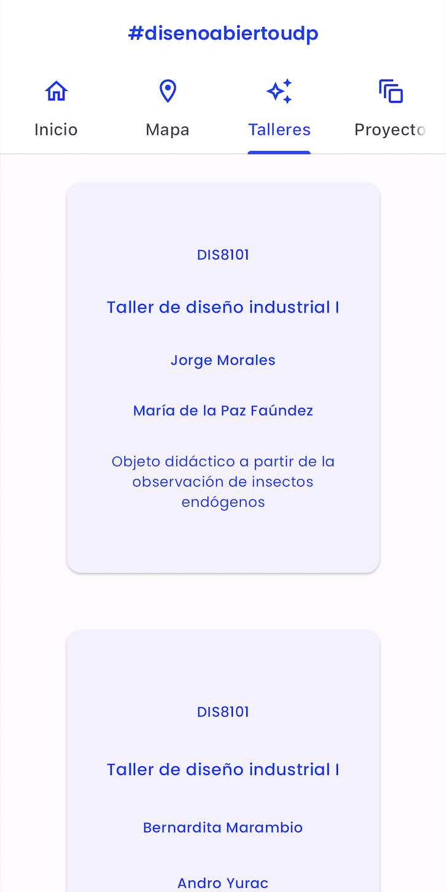

<!DOCTYPE html>
<html lang="es">

</html>

<head>
  <meta charset="UTF-8">
  <meta name="viewport" content="width=device-width, initial-scale=1.0">
  <title>janis</title>
  <link rel="stylesheet" href="./style/style.css">
</head>

<body>
  <header>
    <nav>
      <div class="logo">j a n i s</div>
      <div class="links">
        <a href="https://www.github.com/janisepulveda">GitHub</a>
        <a href="mailto:janis.sepulveda@mail.udp.cl">Email</a>
        <div grid-col="3" grid-pad="2" class>
          <div class="overlay1">
          </div>
        </div>
    </nav>
  </header>
  
  <div class="titulo">
    <h3>App Diseño Abierto</h3>
  </div>
  <div class="row">
    <div class="column">
      
    </div>
    <div class="column">
      
      <div class="overlay11">
        <div class="overlay12">Proyecto creación de una aplicación móvil para la gestión de proyectos de diseño abierto
          en diseño UDP. Esta app cuenta con un mapa de la facultad de arte, arquitectura y diseño UDP ubicada en
          salvador sanfuentes 2221, con el objetivo de ubicar las salas y los talleres. Cuenta con el detalle de los
          talleres de primero y segundo año, talleres verticales con sus respectivos profesores y ayudante. Es el inicio
          de una base de datos hecha en JSON, teniendo un registro de la historia de los trabajos de taller, en un
          formato universal que va a servir para poder generar más plataformas a futuro. App escrita en Flutter y
          publicada para iOS y Android. Financiado mediante un fondo concursable VRA otorgado por la Universidad Diego
          Portales. En colaboración con Aarón Montoya-Moraga.
          <a href="https://github.com/janisepulveda/app-diseno-abierto">GitHub</a>
        </div>
      </div>
    </div>
  </div>
  <footer>
    <p>&copy; 2024 Janis</p>
  </footer>
</body>

</html>